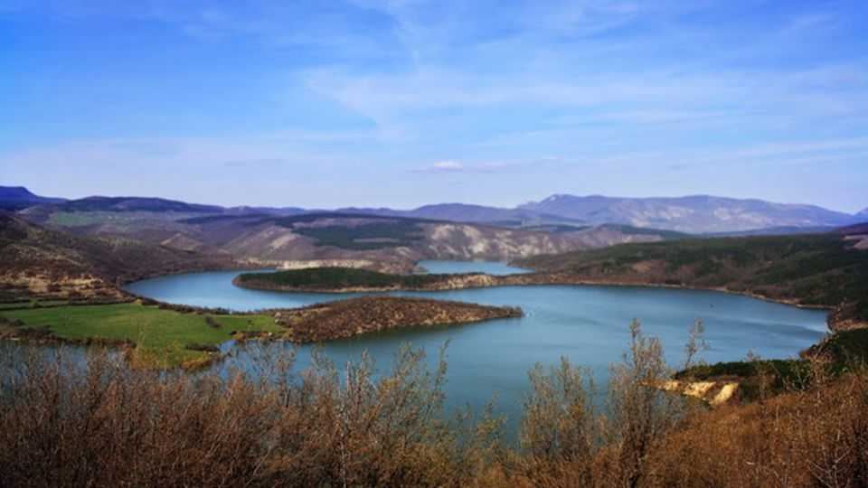

Третият язовир който ще разгледаме е язовир Камчия
Язовир „Ка̀мчия“ е изграден през 1973 г. по поречието на р. Луда Камчия в източната част на Стара планина (извън Община Поморие).
Завирената площ е 9,601 кв. км. Водният обем на язовира е 233,55 млн. куб.м и се формира от реките: р. Луда Камчия, р. Котленска, р. Глогова, р. Нейковска, р. Ичеренска, р. Медвенска и р. Садовска и е с водосборна площ 1612 кв. км. Язовир „Камчия“ дава питейна вода на град Бургас и град Варна. Характеризира се с ниско съдържание на нитрати, повишени количества желязо и манган.
Рибите, които се срещат в язовира са бабушка, каракуда, костур, морунаш, попче, сом, уклей, шаран.
Община Поморие се водоснабдява с питейна вода от язовир „Камчия“ и други местни водоизточници.
Обратно към главната страница